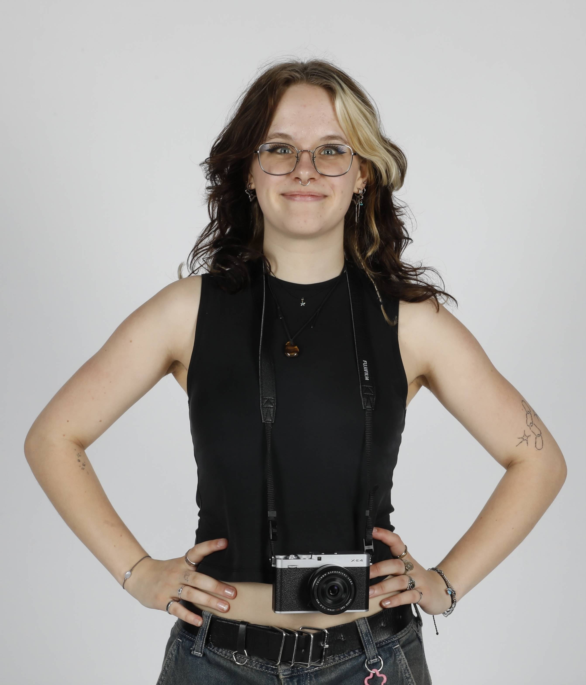

About

A graphic designer and photographer, interested in both digital and printed matter.
She is open to collaboration, sharing ideas and connecting people.
Her interests lie in the often boring and unseen everyday things and she is keen to shine a light on them through her work.
As a bonus, she loves hosting and is currently also a barista, which means she can make you a lovely cup of coffee.